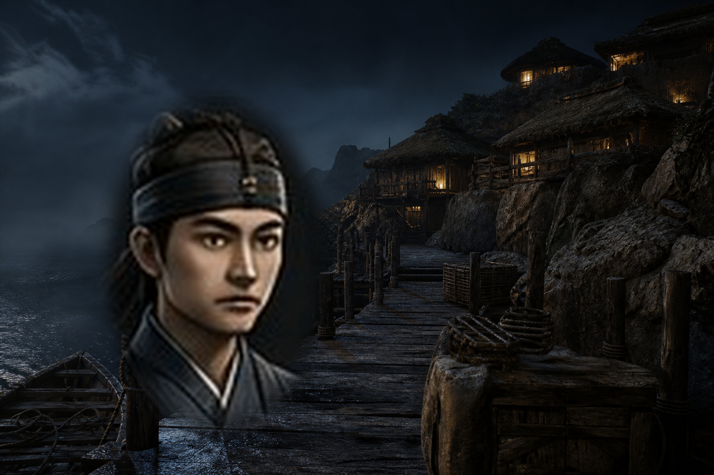
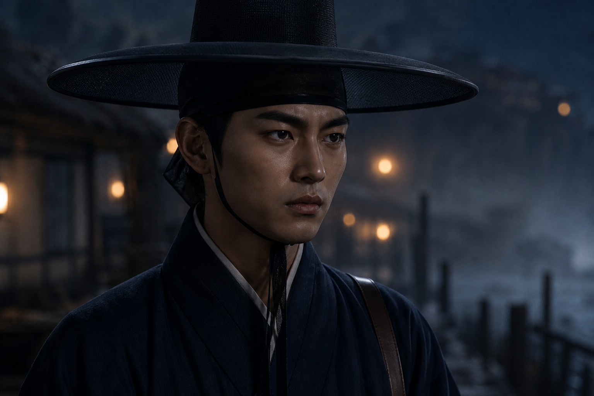
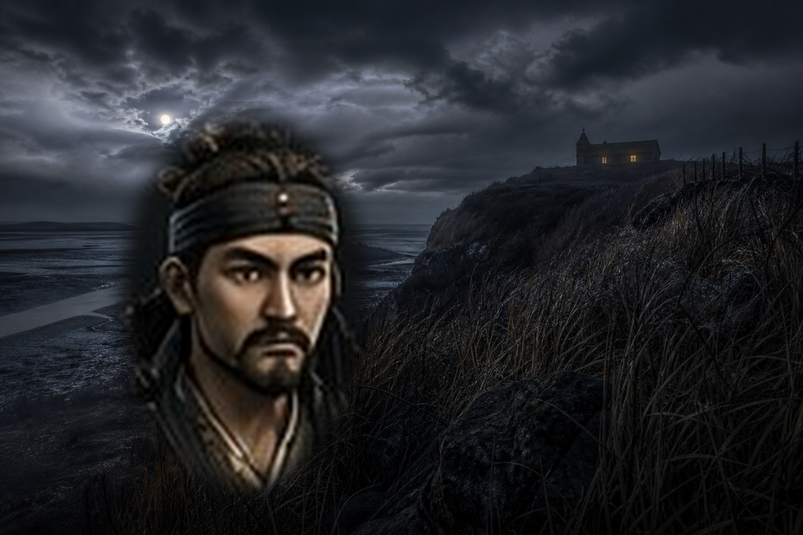
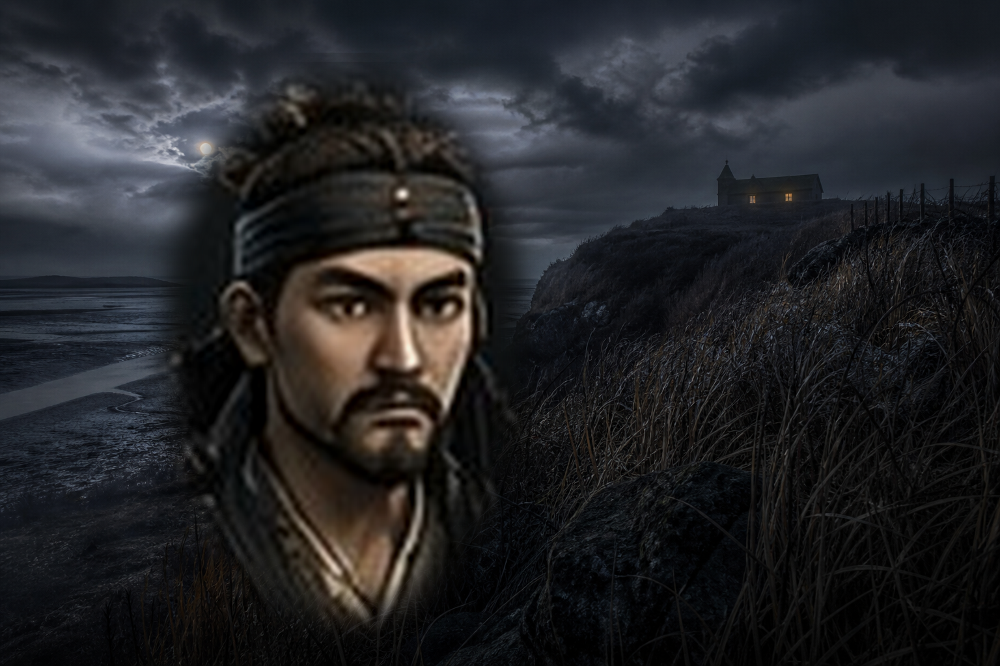
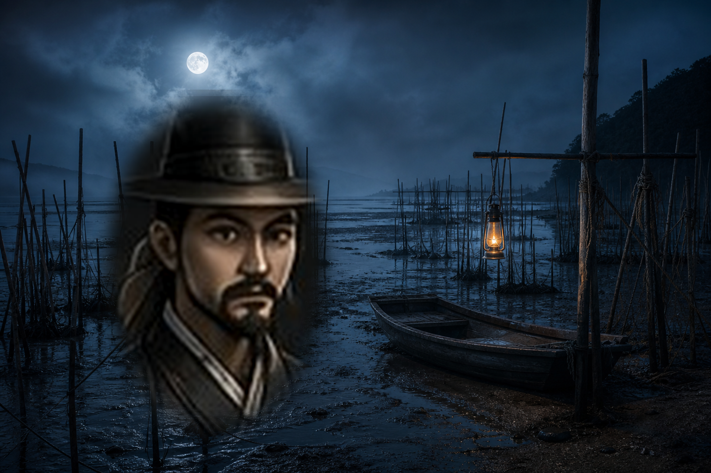
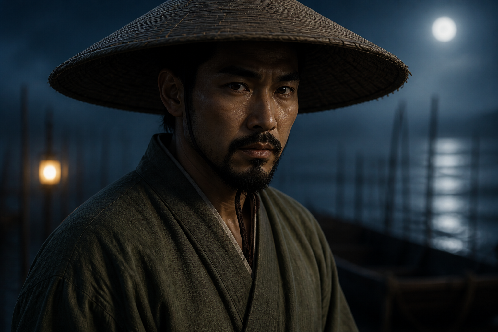
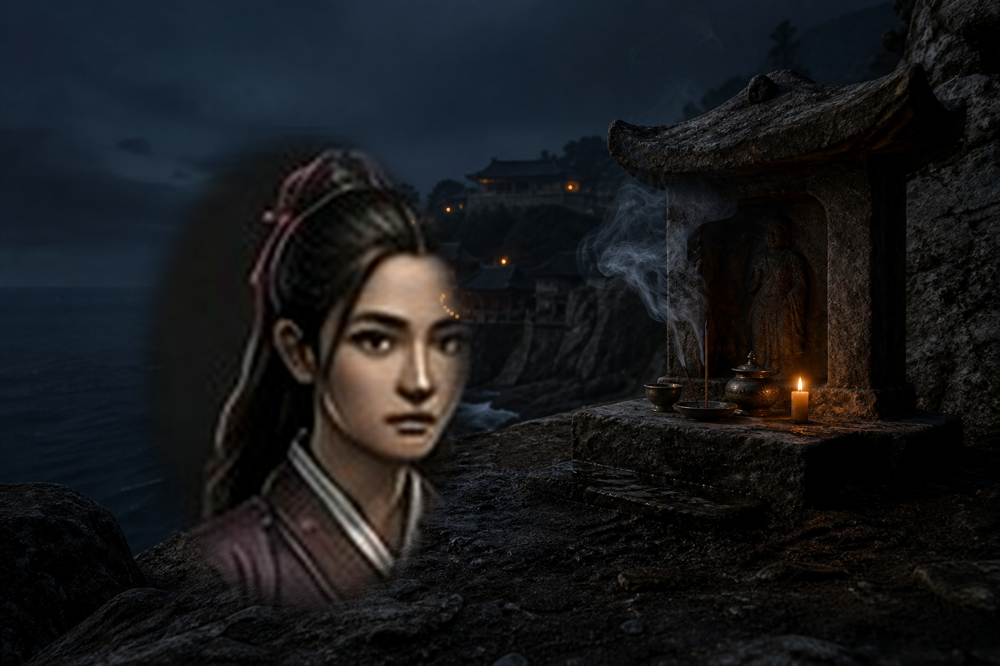
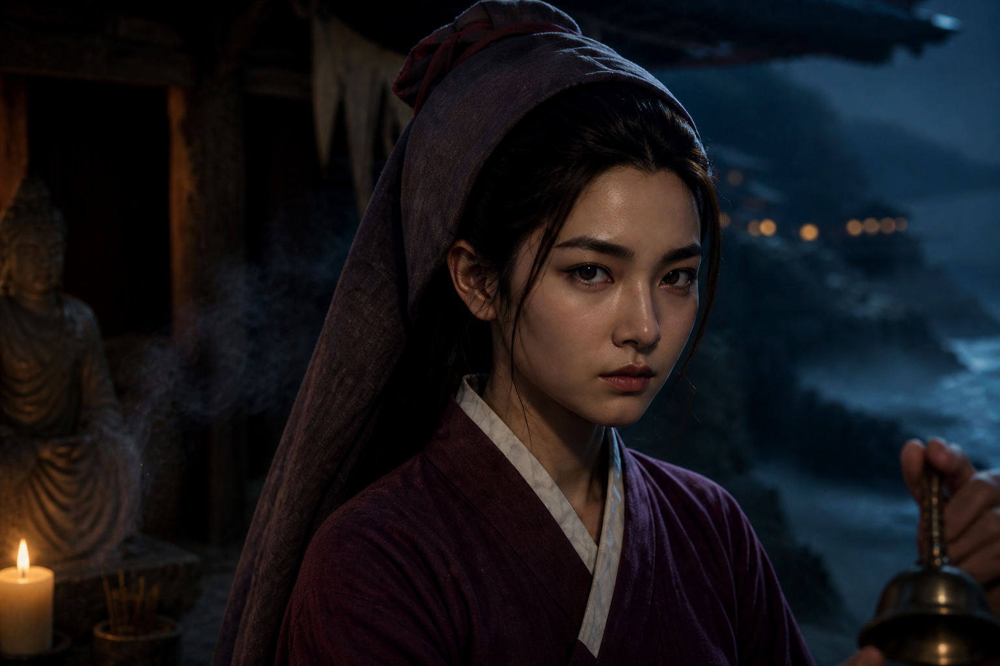

윤해주 역관 겸 의술 보조 · 변장 · 대화 유인 위조 문답과 복식으로 검문을 통과하고, 문서를 읽고 병자를 치료한다. 근접 제압을 못 한다. 정체가 드러나면 도망칠 방법이 없다.  
강무진 파직된 영종진 수군 · 배후 제압 · 밧줄 뒤에서 소리 없이 제압하고, 사람을 업어 옮기고, 담장을 넘고, 문을 부순다. 발소리가 크고 신분 잠입이 안 된다.  
백도치 감나루 뱃사공 · 물길 · 어망 함정 갯골과 물속을 지름길로 쓰고, 어망 함정을 놓고, 조수를 미리 읽는다. 마른 땅과 실내에서는 특기가 없다.  
월심 당집을 떠난 무녀의 제자 · 방울 · 향 연기 방울로 경비를 부르고, 향 연기로 시야를 끊고, 겁먹은 주민을 진정시킨다. 외국인 선원에게는 유인이 통하지 않는다.  